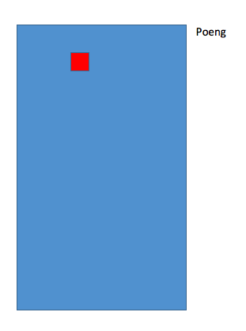
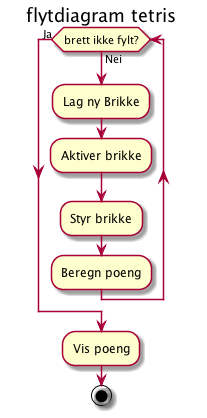

Design av app for Museum
Planlegging
Kravspesifikasjon
Overordna beskrivelse
Vi skal lage en app for et museum. Appen skal ... og ....I skjema 1 skal ...
Registrerte skal ...
Kravliste
- Appen skal ha en tilltalende utforming
- Brukergrensesnitt skal være intuitivt
Design og utforming
Beskrivelse
Skjema skal ...- O Firkanten skal være gul
- I Linja lysblå
- S skal være grønn
- Z skal være rød
- L er orange
- J er blå
- T er lilla
Wireframe
Systemspesifikasjon
Pseudokode
OPPSTART
generer alle tetrominoene (IOSZJLT)
lag brett (10x20)
velg en start-brikke (en av IOSZJLT)
plasser brikken på brettet
start spill-motoren (setInterval)
legg inn eventlistener på taster
(trengs av brukerkommandoer)
SPILLMOTOR
utfør brukerkommandoer
flytt brikken ned
sjekk kollisjon
Flytdiagram
@startuml
title Kurs på museum
while (brett ikke fylt?) is (Nei)
:Lag ny Brikke;
:Aktiver brikke;
:Styr brikke;
:Beregn poeng;
endwhile (Ja)
:Vis poeng;
stop
@enduml

Usecase
Testing
Testspesifikasjon
Test av krav
- Vi skal ha tetrominoene IOJLSZT
Lager tester som sjekker at koden får laget de forskjellige tetrominoene på riktig måte:
Under er et eksempel på tester, men de er ikke implementert (tidsnød).
let tetroT = new Tetroino(" *,***"); assert(tetroI.cells[0][0][0] === 0); - Hver tetromino skal ha sin distinkte farge
assert(tetroT.color = "blue"); - Poengviser oppe til høyre visuell inspeksjon av skjema - stemmer
- Forhåndsvisning av "neste" brikke ditto
- Spillet er over når neste brikke ikke får plass må testes av spiller
- Hastighet øker for hver 10 linje - testes av beta-player tester brukervennlighet -
Test av grenser
- Test at brikkene er sperra inne i brettet - skal ikke kunne flytte forbi høyre/venstre kant
- Test at rotasjon er logisk Pil opp roterer 90 med viser, pil ned motsatt
- Test at vi får poeng for fulle linjer
- test at spillet stopper når brettet er fullt